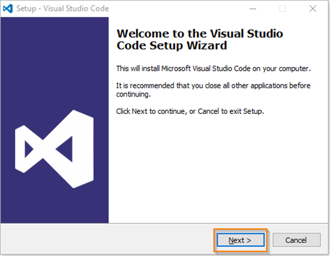
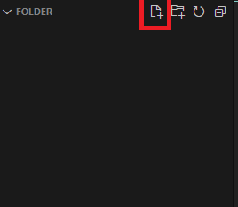
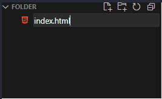
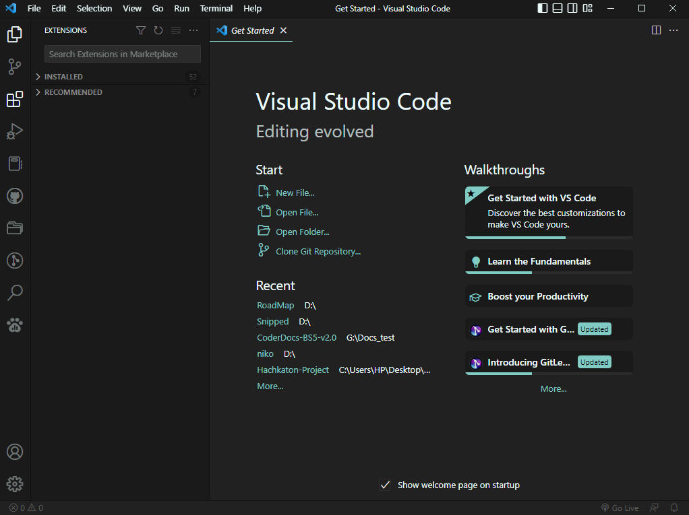
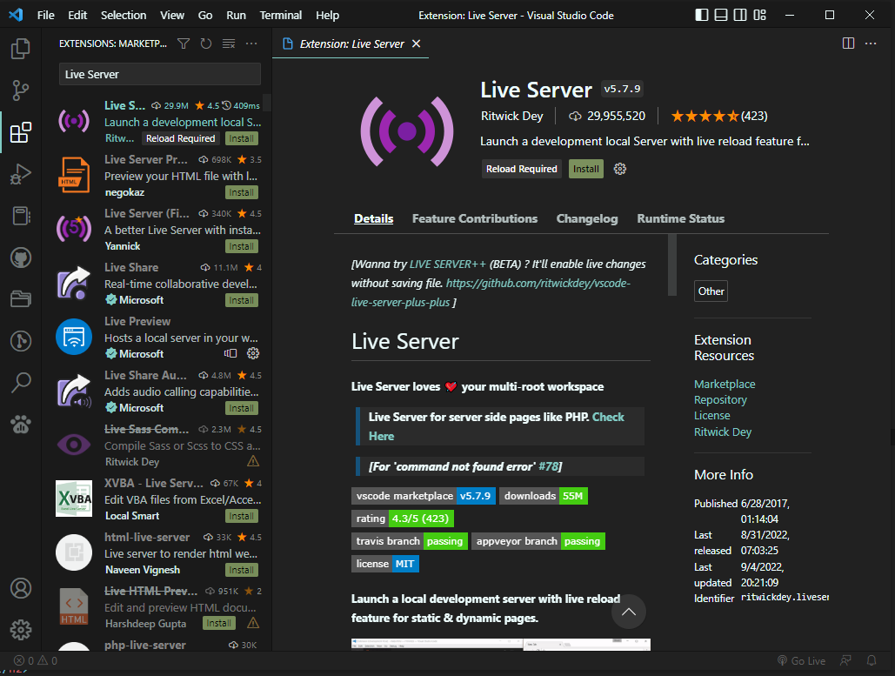
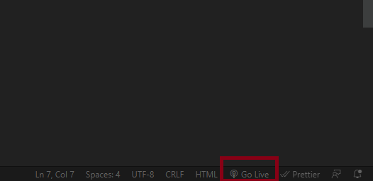
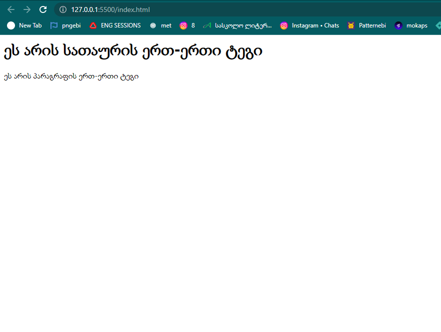
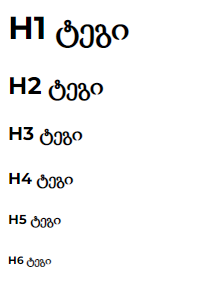
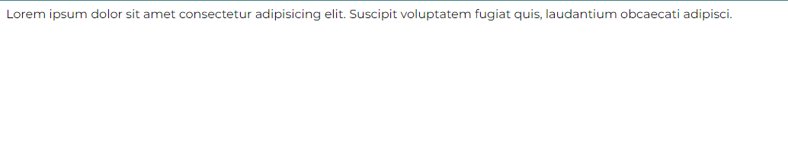

- პირველრიგში ჩამოვტვირთოთ Visual Studio Code
ჩამოსატვირთი ლინკი
- ჩვეულებრივად დავაინსტალიროთ

- როგორ შევქმნათ HTML ფაილი
პირველ რიგში ზედა მარჯვენა კუთხეში ვაჭერთ File > Open Folder და ვირჩევთ Folder-ს
ფაილის შესაქმნელად ვაჭერთ 

- Extension/გაფართოებები
Visual Studio Code-ის ჩამოტვირთვის შემდეგ დაგვჭირდება მისი ერთ-ერთი ყველაზე მნიშვნელოვანი გაფართოება Live Server
- რა არის live Server
live server-ის მეშვეობით ჩვენი HTML ფაილი გაეშვება ბრაუზერში
- live Server-ის ჩამოტვირთვა
- გადავდივართ Extension tab-ში

- ვეძებთ Live Server
- ვირჩევთ პირველივეს
- ვაჭერთ install

- როგორ გავუშვათ live Server
HTML ფაილის შექმნის შემდეგ ქვედა მარჯვენა კუთხეში იქნება ღილაკი Go Live. დაჭერის
შემდეგ ჩვენი ფაილი გაეშვება და დავინახავთ ჩვენს შედეგს.

- რა არის HTML
HTML ასევე ცნობილი როგორც Hyper
Text Markup Language.
გამოიყენება ვებ გვერდების სტრუქტურისა და განლაგების შესაქმნელად, ტეგების მეშვეობით.
- როგორ გამოიყურება HTML
HTML მთავარი სტრუქტურის მაგალითი

HTML-ის body ტეგში იწერება ჩვენი მთავარი სტრუქტურა
HTML-ის head ტეგში იწერება ჩვენი ვებსაიტის მეტა (Meta) ინფორმაცია. ეს ინფორმაცია მომხმარებლისთვის უხილავია
ასევე head ტეგი გამოიყენება ჩვენი სტილების დასაკავშირებლად (CSS).
HTML-ის HTML ტეგი არის ამ ყველაფრის ერთგვარი ფესვები, ის გამოიყენება როგორც ერთგვარი კონტეინერი
ყველა ზემოთმოცემული ტეგის დაწერა აუცილებელია. ასევე აუცილებელია თანმიმდევრობის დაცვა
- სად ვწერთ HTML-ის კოდს
HTML- ის კოდის დასაწერად დაგვჭირდება Text Editor როგორიც არის Visual Studio Code

ჩამოსატვირთი ლინკი
- რა არის HTML ტეგები
HTML ტეგები ეს არის საფუძველი ჩვენი ვებსაიტის. სწორედ მათი კომბინირების მეშვეობით
ჩვენ ვაწყობთ ჩვენს ვებსაიტს
- მაგალითი:
- სათაურის ტეგები (Header)
სათაურის ტეგები გვაქვს 6 ცალი H1-H6 ის ჩათვლით მათ შორის განსხვავება
მხოლოდ ზომაშა.


- პარაგრაფის ტეგი (Paragraph)
პარაგრაფის ტეგი ასევე ცნობილი როგორც "P" ტეგი. მასში ვინახავთ დიდი მოცულობის ტექსტს
